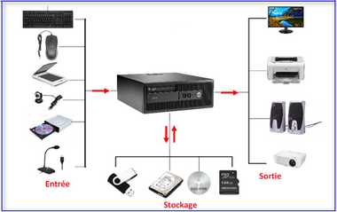
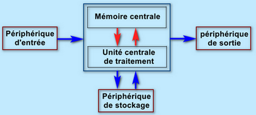
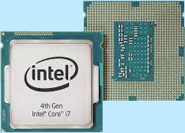
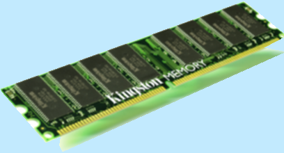
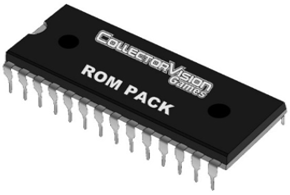

III- Structure de base d'un système informatique
Schéma fonctionnel


1. L’unité centrale de traitement (l’UCT)
a- Qu’est-ce que l’unité centrale de traitement
L’UCT appelée aussi Processeur ou Microprocesseur est le cerveau de l’ordinateur. Elle sert à :
- Faire les calculs,
- Et diriger le travail des autres parties de l’ordinateur (mémoire, écran, clavier…)

b- Les composants de UCT
- Unité arithmétique et logique : Effectue des opérations arithmétiques (+, - , X , ÷ ) et logiques ( ≠, = , < , ≤ , > , ≥ ).
• Unité de commande: dirige le fonctionnement de l’ordinateur et décode les instructions du programme.
• Les registres: Sont des mémoires intégrées au processeur. Stockent temporairement les données et les instructions pendant leur traitement
• Bus entrant et sortant: Sont des dispositifs de transmission de données
c- Caractéristiques de l’UCT:
• Fréquence d'horloge (GHz) : le nombre d'opérations à exécuter par seconde.
Exemple :
• Architecture : C’est la conception interne du processeur (ex : x86, x64), La taille des données que le processeur peut traiter en une seule fois.
• Mémoire cache: Mémoire très rapide intégrée au processeur pour stocker les données fréquemment utilisées, ( L1 (très rapide), L2 (intermédiaire), L3 (plus grande, mais plus lente)).
• Nombre de cœurs: c’est le nombre d’unités de calcul
‼ Attention : Un processeur Intel Core i5 ne contient pas nécessairement 5 cœurs. Le chiffre "i5" ne signifie pas 5 cœurs, mais à la gamme du processeur dans la hiérarchie d'Intel.
Remarque :
• Pour vérifier le nombre de cœurs d’un ordinateur : Ctrl + Maj + Échap → Onglet "Performances".
2. La mémoire centrale
a- La mémoire vive ou RAM (Random Access Memory)
C’est la mémoire principale de l’ordinateur qui stocke les données et les instructions en cours de traitement, Elle est accessible en lecture et en écriture. Cette mémoire est dite volatile car elle se vide lorsque l’ordinateur est éteint.

Format:
• SO-DIMM (Small Outline Dual In-Line Memory Module) : Pour PC portables et mini-PC (format compact).
b- La mémoire morte ou ROM (Read Only Memory)
La mémoire morte est une mémoire en lecture seule, elle contient des programmes nécessaires au démarrage de l'ordinateur. Cette mémoire est dite non volatile, car elle ne s'efface pas même si l’ordinateur est éteint.

A retenir
• Elle sert aussi à stocker des programmes de base, comme : Le firmware d’un téléphone, d’une imprimante, d’une console de jeu, etc.
3. Les organes périphériques
a- Les périphériques d'entrée
Permettent de transmettre des données à l'ordinateur.
Exemples :
- Souris : pointage
- Microphone : capture audio
- Scanner : numérisation de documents
- Webcam : capture vidéo
- Manette de jeu : contrôle des jeux vidéo
- Lecteur de cd/dvd-rom : lire les données enregistrées sur un CD/DVD-ROM
b- Les périphériques de sortie
Permettent de recevoir les informations traitées par l’ordinateur.
Exemples :
- Imprimante : sortie papier
- Haut-parleurs : sortie audio
- Vidéo Projecteur : affichage sur grand écran
c- Les supports de stockage
Permettent de conserver des données de manière permanente
Exemples :
- Disque dur
- Carte mémoire
- Cd-rom et dvd-rom
Remarque :
IL y a aussi des périphériques d’entrée/sortie comme :
• Le graveur de cd/dvd-rom : lire et écrire des données sur un disque cd/dvd-rom
• Lecteur de carte mémoire : lire et écrire des données sur la carte mémoire
• Écran tactile : affichage + saisie